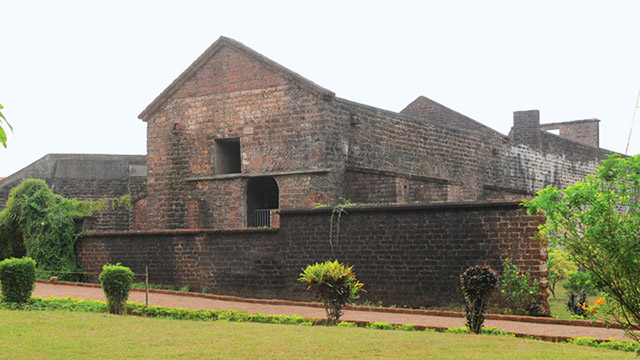

Kannur
The Land of Looms & Lores

Kannur
The Land of Looms & Lores
The Land of Looms & Lores
The Land of Looms & Lores
Kannur is northernmost districts of Kerala blessed with full of greenary and historious places. Kannur is famous for Politics and Temple festivals. Towards the north of Kozhikod and Wayanad districts lies the district of Kannur. The region is famous for the dazzling ritual performance called Theyyam. Kannur District is one of the 14 districts along the west coast in the state of Kerala, India. The town of Kannur is the district headquarters and gives the district its name. The old name, Cannanore is the anglicised form of the Malayalam name "Kannur".
The Arakkal Museum is a museum dedicated to the Arakkal family, the only Muslim royal family in Kerala, India. The museum is actually a section of the Arakkalkettu (Arakkal Royal Palace). The durbar hall section of the palace has been converted into a museum by the Government of Kerala.
The Kannur Lighthouse is located near the Payyambalam Beach, a few kilometers from Kannur town, in Kerala state, south India. It is adjacent to the Sea View Park and the Government Guest House. The lighthouse is still active and overlooks the Arabian Sea.

Mappila Bay (or Moppila Bay) is a natural harbor situated at Ayikkara in Kannur Municipal Corporation, Kerala state of South India.[1] On one side of the bay is Fort St. Angelo, built by the Portuguese in the 15th century and the other side is the Arakkal Palace.

The Payyambalam Beach is an impeccably maintained destination in Kannur. This secluded location is known for providing one with the opportunity to simply relax or enjoy a family picnic in absolute tranquillity. Surfing and swimming options are also available for those who seek a little adventure.
Built by the first Portuguese Viceroy in India, Don Francesco de Almeida (1505), St. Angelos Fort is among the most historic sites in Kannur. This massive triangular laterite structure is flanked by gigantic bastions that make for an imposing sight. It changed hands between the Dutch and eventually the British, who would remodel and reequip it into their primary military stronghold in Malabar.